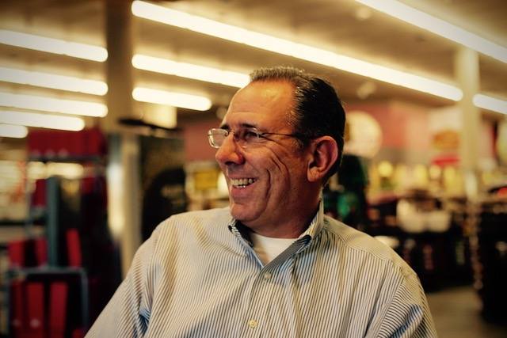

Episode 1: Lloyd Kirchner
February 16, 2016

Lloyd Kirchner is a friend and a man of many talents. He’s a...
- marathon runner
- improv jazz musician
- engineer
- entrepreneur
- leader & manager
- Montessori parent and
- race car driver
But like a lot of accomplished Houstonians, his story is not well known so I knew he would make a perfect subject for the first Loop Houston podcast:
In this podcast, Hesam and I covered a lot of topics with Lloyd:
Growing up in Houston, studying at Rice University & starting his career in big energy:
- Growing up in Houston through middle school, high school, and college (at Rice University) 0:00:42
- Starting his professional career at a big integrated energy company in 1985 0:01:48
- Surviving the bottom of oil economy with oil at $8 per barrel in 1986 (“My boss said… I didn’t keep you because you were the smartest guy on the payroll, you were the cheapest.” :-)) 0:03:16
- Getting an MBA from University of Chicago 0:08:44
After 4 years living out in West Texas, I realized I would have rather been the owner of the machine shop than a guy who was working his way up the corporate ladder.
Joining Capstone Turbine as an early employee and helping to take them public in a $7.5B IPO in 2000 (NASDAQ: CPST):
- Joining as an early employee at micro-turbine innovator, Capstone Turbine Corp 0:12:55
- Helping take Capstone Turbine Corp public to a $7.5B IPO in 2000, just before the dot-com bubble burst 0:21:10 0:26:14
- How lead engineers of Capstone Turbines went on to be central employees at SpaceX and Tesla (TSLA) and other leading companies today 0:59:32
We were trying to predict a market that we were essentially inventing.
Founding Commonwealth Engineering and building an exceptional company culture:
- Moving back to Houston and co-founding Commonwealth Engineering in 2003, growing it to 350 people in 3 years 0:33:28
- Building the company culture at Commonwealth that set them apart and made them exceptional 0:39:40 0:46:33
- What is servant leadership? 0:49:27
- How progressive companies embrace the work habit and motivational differences of “millennials” 1:02:26
- “I think for entrepreneurs it’s a better environment than ever… We have tools we never had before. If you have some courage and an idea, you can go out and make a business.” 1:05:45
- “Life is really enjoyable when you really like what you do. The fact of the matter is I want to create a work environment where people come into work every day and be themselves, they can be their best.” 1:18:22
That's part of leadership - correcting your mistakes, apologizing when you're wrong, and admitting that you're not always going to get it right. and it's really about parking your ego at the door and doing the best you can.
Lloyd's new company:
- Should new graduates start a company or go to work at a well established company? 1:06:25
- Tidal Wave, Lloyd’s new start-up in the corporate health and safety software space 1:09:25
Hobbies, including improv jazz and car racing:
- Lloyd’s hobbies as an improv jazz musician, playing the keyboard and the bass 1:25:40
- Racing cars at raceways in California like Button Willow, Willow Springs & Sears Point 1:30:38
← back to the Loop Houston front page